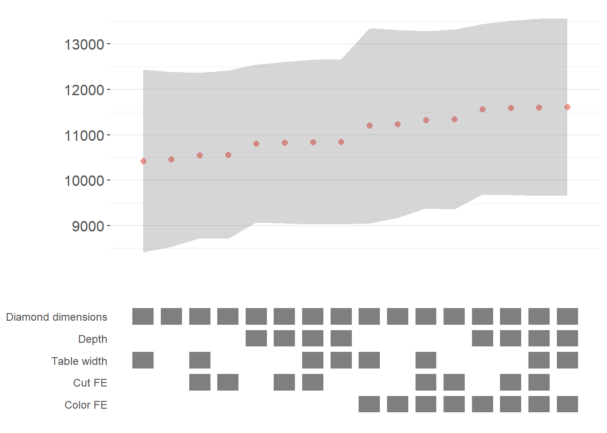
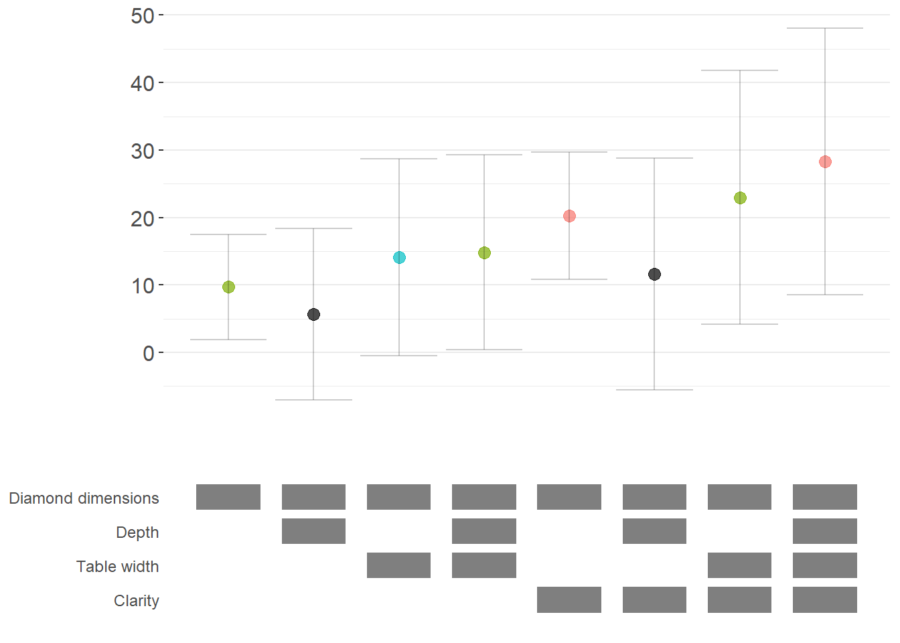

42.2 Specification Curve Analysis
Specification curve analysis (also known as multiverse analysis or the specification robustness graph) provides a systematic way to examine how results vary across a large set of defensible specifications. Rather than reporting a single “preferred” specification, this approach acknowledges that multiple specifications may be equally justifiable and examines the distribution of estimates across all of them.
42.2.1 Conceptual Foundation
The specification curve approach was formalized by Simonsohn, Simmons, and Nelson (2020), though similar ideas have appeared under various names in the literature. The key insight is that researchers make many decisions when specifying a model: which controls to include, which fixed effects to add, how to cluster standard errors, etc. And these decisions can be viewed as creating a “multiverse” of possible specifications. By systematically varying these choices and examining the resulting distribution of estimates, we can assess whether our main conclusion depends on arbitrary specification choices.
A specification curve typically consists of two panels:
- The coefficient panel: Shows the point estimate and confidence interval for the main variable of interest across all specifications, typically sorted by coefficient magnitude
- The specification panel: Shows which modeling choices were made in each specification (e.g., which controls were included, which fixed effects were used)
This visualization makes it easy to see whether results are driven by particular specification choices and whether the finding is robust across the specification space.
42.2.2 The starbility Package
The starbility package provides a flexible and user-friendly implementation of specification curve analysis. It works seamlessly with various model types and allows for sophisticated customization.
42.2.2.1 Installation and Setup
# Install from GitHub
# devtools::install_github('https://github.com/AakaashRao/starbility')
library(starbility)
# Load other required packages
library(tidyverse) # For data manipulation and visualization
library(lfe) # For fixed effects models
library(broom) # For tidying model output
library(cowplot) # For combining plots42.2.2.2 Basic Specification Curve with Multiple Controls
Let’s start with an example using the diamonds dataset. This example demonstrates how to systematically vary control variables and visualize the resulting specification curve.
library(tidyverse)
library(starbility)
library(lfe)
# Load and prepare data
data("diamonds")
set.seed(43) # For reproducibility
# Create a subset for computational efficiency
# In practice, you'd use your full dataset
indices = sample(1:nrow(diamonds),
replace = FALSE,
size = round(nrow(diamonds) / 20))
diamonds = diamonds[indices, ]
# Create additional variables for demonstration
diamonds$high_clarity = diamonds$clarity %in% c('VS1','VVS2','VVS1','IF')
diamonds$log_price = log(diamonds$price)
diamonds$log_carat = log(diamonds$carat)Now let’s define our specification universe. The key is to think carefully about which specification choices are defensible and should be explored:
# Base controls: These are included in ALL specifications
# Use this for controls that you believe should always be included based on theory
base_controls = c(
'Diamond dimensions' = 'x + y + z' # Physical dimensions
)
# Permutable controls: These will be included in all possible combinations
# These are controls where theory doesn't give clear guidance on inclusion
perm_controls = c(
'Depth' = 'depth',
'Table width' = 'table'
)
# Permutable fixed effects: Different types of fixed effects to explore
# Useful when you have multiple ways to control for unobserved heterogeneity
perm_fe_controls = c(
'Cut FE' = 'cut',
'Color FE' = 'color'
)
# Non-permutable fixed effects: Alternative specifications (only one included at a time)
# Use this when you have mutually exclusive ways of controlling for something
nonperm_fe_controls = c(
'Clarity FE (granular)' = 'clarity',
'Clarity FE (binary)' = 'high_clarity'
)
# If you want to explore instrumental variables specifications
instruments = 'x + y + z'
# Add sample weights for robustness
diamonds$sample_weights = runif(n = nrow(diamonds))42.2.2.3 Custom Model Functions
One of the most powerful features of starbility is the ability to use custom model functions. This allows you to implement your preferred estimation approach, including custom standard errors, specific inference procedures, or alternative confidence intervals.
# Custom function for felm models with robust standard errors
# This function must return a vector of: c(coefficient, p-value, upper CI, lower CI)
starb_felm_custom = function(spec, data, rhs, ...) {
# Convert specification string to formula
spec = as.formula(spec)
# Estimate the model using lfe::felm
# felm is particularly useful for models with multiple fixed effects
model = lfe::felm(spec, data = data) %>%
broom::tidy() # Convert to tidy format
# Extract results for the variable of interest (rhs)
row = which(model$term == rhs)
coef = model[row, 'estimate'] %>% as.numeric()
se = model[row, 'std.error'] %>% as.numeric()
p = model[row, 'p.value'] %>% as.numeric()
# Calculate confidence intervals
# Here we use 99% CI for more conservative inference
z = qnorm(0.995) # 99% confidence level
upper_ci = coef + z * se
lower_ci = coef - z * se
# For one-tailed tests, divide p-value by 2
# Remove this if you want two-tailed p-values
p_onetailed = p / 2
return(c(coef, p_onetailed, upper_ci, lower_ci))
}
# Alternative: Custom function with heteroskedasticity-robust SEs
starb_lm_robust = function(spec, data, rhs, ...) {
spec = as.formula(spec)
# Estimate with HC3 robust standard errors
model = lm(spec, data = data)
robust_se = sandwich::vcovHC(model, type = "HC3")
# Use lmtest for robust inference
coef_test = lmtest::coeftest(model, vcov = robust_se)
row = which(rownames(coef_test) == rhs)
coef = coef_test[row, 'Estimate']
se = coef_test[row, 'Std. Error']
p = coef_test[row, 'Pr(>|t|)']
z = qnorm(0.975) # 95% confidence level
return(c(coef, p, coef + z * se, coef - z * se))
}42.2.2.4 Creating the Specification Curve
Now we can generate our specification curve with all the bells and whistles (Figure 42.1)
# Generate specification curve
# This will create plots showing how the coefficient varies across specifications
plots = stability_plot(
data = diamonds,
lhs = 'price', # Dependent variable
rhs = 'carat', # Main independent variable of interest
model = starb_felm_custom, # Use our custom model function
# Clustering and weights
cluster = 'cut', # Cluster standard errors by cut
weights = 'sample_weights', # Use sample weights
# Control variable specifications
base = base_controls, # Always included
perm = perm_controls, # All combinations
perm_fe = perm_fe_controls, # All combinations of these FEs
# Alternative: Use non-permutable FE (only one at a time)
# nonperm_fe = nonperm_fe_controls,
# fe_always = FALSE, # Set to FALSE to include specs without any FEs
# Instrumental variables (if needed)
# iv = instruments,
# Sorting and display options
sort = "asc-by-fe", # Options: "asc", "desc", "asc-by-fe", "desc-by-fe"
# Visual customization
error_geom = 'ribbon', # Display error bands as ribbons (alternatives: 'linerange', 'none')
# error_alpha = 0.2, # Transparency of error bands
# point_size = 1.5, # Size of coefficient points
# control_text_size = 10, # Size of control labels
# For datasets with fewer specifications, you might want:
# control_geom = 'circle', # Use circles instead of rectangles
# point_size = 2,
# control_spacing = 0.3,
# Customize the y-axis range if needed
# coef_ylim = c(-5000, 35000),
# Adjust spacing between panels
# trip_top = 3,
# Relative height of coefficient panel vs control panel
rel_height = 0.6
)
Figure 42.1: Specification curve for the effect of carat on price
The specification curve uses color coding to indicate statistical significance:
- Red: \(p < 0.01\) (highly significant)
- Green: \(p < 0.05\) (significant)
- Blue: \(p < 0.1\) (marginally significant)
- Black: \(p > 0.1\) (not significant)
This color scheme makes it easy to see at a glance whether your finding is robust across specifications, or whether significance depends on particular specification choices.
42.2.3 Advanced Specification Curve Techniques
42.2.3.1 Step-by-Step Control of the Process
For maximum flexibility, starbility allows you to control each step of the specification curve generation process. This is useful when you want to modify the grid of specifications, use custom model functions, or create highly customized visualizations.
# Ensure high_clarity variable exists
diamonds$high_clarity = diamonds$clarity %in% c('VS1','VVS2','VVS1','IF')
# Redefine controls for this example
base_controls = c(
'Diamond dimensions' = 'x + y + z'
)
perm_controls = c(
'Depth' = 'depth',
'Table width' = 'table'
)
perm_fe_controls = c(
'Cut FE' = 'cut',
'Color FE' = 'color'
)
nonperm_fe_controls = c(
'Clarity FE (granular)' = 'clarity',
'Clarity FE (binary)' = 'high_clarity'
)
# Step 1: Create the control grid
# This generates all possible combinations of controls
grid1 = stability_plot(
data = diamonds,
lhs = 'price',
rhs = 'carat',
perm = perm_controls,
base = base_controls,
perm_fe = perm_fe_controls,
nonperm_fe = nonperm_fe_controls,
run_to = 2 # Stop after creating the grid
)
# Examine the grid structure
knitr::kable(grid1 %>% head(10))| Diamond dimensions | Depth | Table width | Cut FE | Color FE | np_fe |
|---|---|---|---|---|---|
| 1 | 0 | 0 | 0 | 0 | |
| 1 | 1 | 0 | 0 | 0 | |
| 1 | 0 | 1 | 0 | 0 | |
| 1 | 1 | 1 | 0 | 0 | |
| 1 | 0 | 0 | 1 | 0 | |
| 1 | 1 | 0 | 1 | 0 | |
| 1 | 0 | 1 | 1 | 0 | |
| 1 | 1 | 1 | 1 | 0 | |
| 1 | 0 | 0 | 0 | 1 | |
| 1 | 1 | 0 | 0 | 1 |
# Each row represents a different specification
# Columns indicate which controls/FEs are included (1 = yes, 0 = no)
# Step 2: Generate model expressions
# This creates the actual formula for each specification
grid2 = stability_plot(
grid = grid1, # Use the grid from step 1
data = diamonds,
lhs = 'price',
rhs = 'carat',
perm = perm_controls,
base = base_controls,
run_from = 2, # Start from step 2
run_to = 3 # Stop after generating expressions
)
# View the formulas
knitr::kable(grid2 %>% head(10))| Diamond dimensions | Depth | Table width | np_fe | expr |
|---|---|---|---|---|
| 1 | 0 | 0 | 0 | price~carat+x+y+z|0|0|0 |
| 1 | 1 | 0 | 0 | price~carat+x+y+z+depth|0|0|0 |
| 1 | 0 | 1 | 0 | price~carat+x+y+z+table|0|0|0 |
| 1 | 1 | 1 | 0 | price~carat+x+y+z+depth+table|0|0|0 |
| 1 | 0 | 0 | 0 | price~carat+x+y+z|0|0|0 |
| 1 | 1 | 0 | 0 | price~carat+x+y+z+depth|0|0|0 |
| 1 | 0 | 1 | 0 | price~carat+x+y+z+table|0|0|0 |
| 1 | 1 | 1 | 0 | price~carat+x+y+z+depth+table|0|0|0 |
| 1 | 0 | 0 | 0 | price~carat+x+y+z|0|0|0 |
| 1 | 1 | 0 | 0 | price~carat+x+y+z+depth|0|0|0 |
# Now each row has an 'expr' column with the full model formula
# Step 3: Estimate all models
# This runs the actual regressions
grid3 = stability_plot(
grid = grid2,
data = diamonds,
lhs = 'price',
rhs = 'carat',
perm = perm_controls,
base = base_controls,
run_from = 3,
run_to = 4
)
# View estimation results
knitr::kable(grid3 %>% head(10))| Diamond dimensions | Depth | Table width | np_fe | expr | coef | p | error_high | error_low |
|---|---|---|---|---|---|---|---|---|
| 1 | 0 | 0 | 0 | price~carat+x+y+z|0|0|0 | 10461.86 | p<0.01 | 11031.84 | 9891.876 |
| 1 | 1 | 0 | 0 | price~carat+x+y+z+depth|0|0|0 | 10808.25 | p<0.01 | 11388.81 | 10227.683 |
| 1 | 0 | 1 | 0 | price~carat+x+y+z+table|0|0|0 | 10423.42 | p<0.01 | 10992.00 | 9854.849 |
| 1 | 1 | 1 | 0 | price~carat+x+y+z+depth+table|0|0|0 | 10851.31 | p<0.01 | 11428.58 | 10274.037 |
| 1 | 0 | 0 | 0 | price~carat+x+y+z|0|0|0 | 10461.86 | p<0.01 | 11031.84 | 9891.876 |
| 1 | 1 | 0 | 0 | price~carat+x+y+z+depth|0|0|0 | 10808.25 | p<0.01 | 11388.81 | 10227.683 |
| 1 | 0 | 1 | 0 | price~carat+x+y+z+table|0|0|0 | 10423.42 | p<0.01 | 10992.00 | 9854.849 |
| 1 | 1 | 1 | 0 | price~carat+x+y+z+depth+table|0|0|0 | 10851.31 | p<0.01 | 11428.58 | 10274.037 |
| 1 | 0 | 0 | 0 | price~carat+x+y+z|0|0|0 | 10461.86 | p<0.01 | 11031.84 | 9891.876 |
| 1 | 1 | 0 | 0 | price~carat+x+y+z+depth|0|0|0 | 10808.25 | p<0.01 | 11388.81 | 10227.683 |
# Now includes coefficient estimates, p-values, and confidence intervals
# Step 4: Prepare data for plotting
# This creates the two dataframes needed for visualization
dfs = stability_plot(
grid = grid3,
data = diamonds,
lhs = 'price',
rhs = 'carat',
perm = perm_controls,
base = base_controls,
run_from = 4,
run_to = 5
)
coef_grid = dfs[[1]] # Data for coefficient panel
control_grid = dfs[[2]] # Data for control specification panel
knitr::kable(coef_grid %>% head(10))| Diamond dimensions | Depth | Table width | np_fe | expr | coef | p | error_high | error_low | model |
|---|---|---|---|---|---|---|---|---|---|
| 1 | 0 | 0 | 0 | price~carat+x+y+z|0|0|0 | 10461.86 | p<0.01 | 11031.84 | 9891.876 | 1 |
| 1 | 1 | 0 | 0 | price~carat+x+y+z+depth|0|0|0 | 10808.25 | p<0.01 | 11388.81 | 10227.683 | 2 |
| 1 | 0 | 1 | 0 | price~carat+x+y+z+table|0|0|0 | 10423.42 | p<0.01 | 10992.00 | 9854.849 | 3 |
| 1 | 1 | 1 | 0 | price~carat+x+y+z+depth+table|0|0|0 | 10851.31 | p<0.01 | 11428.58 | 10274.037 | 4 |
| 1 | 0 | 0 | 0 | price~carat+x+y+z|0|0|0 | 10461.86 | p<0.01 | 11031.84 | 9891.876 | 5 |
| 1 | 1 | 0 | 0 | price~carat+x+y+z+depth|0|0|0 | 10808.25 | p<0.01 | 11388.81 | 10227.683 | 6 |
| 1 | 0 | 1 | 0 | price~carat+x+y+z+table|0|0|0 | 10423.42 | p<0.01 | 10992.00 | 9854.849 | 7 |
| 1 | 1 | 1 | 0 | price~carat+x+y+z+depth+table|0|0|0 | 10851.31 | p<0.01 | 11428.58 | 10274.037 | 8 |
| 1 | 0 | 0 | 0 | price~carat+x+y+z|0|0|0 | 10461.86 | p<0.01 | 11031.84 | 9891.876 | 9 |
| 1 | 1 | 0 | 0 | price~carat+x+y+z+depth|0|0|0 | 10808.25 | p<0.01 | 11388.81 | 10227.683 | 10 |
# Step 5: Create the plot panels
# This generates the two ggplot objects
panels = stability_plot(
data = diamonds,
lhs = 'price',
rhs = 'carat',
coef_grid = coef_grid,
control_grid = control_grid,
run_from = 5,
run_to = 6
)
# Step 6: Combine and display
# Final step to create the complete visualization
final_plot = stability_plot(
data = diamonds,
lhs = 'price',
rhs = 'carat',
coef_panel = panels[[1]],
control_panel = panels[[2]],
run_from = 6,
run_to = 7
)42.2.3.2 Specification Curves for Non-Linear Models
Specification curve analysis is not limited to linear models. Here’s how to implement it with logistic regression (Figure 42.2).
# Create binary outcome variable
diamonds$above_med_price = as.numeric(diamonds$price > median(diamonds$price))
# Add sample weights for logit model
diamonds$weight = runif(nrow(diamonds))
# Define controls
base_controls = c('Diamond dimensions' = 'x + y + z')
perm_controls = c(
'Depth' = 'depth',
'Table width' = 'table',
'Clarity' = 'clarity'
)
lhs_var = 'above_med_price'
rhs_var = 'carat'
# Step 1: Create initial grid
grid1 = stability_plot(
data = diamonds,
lhs = lhs_var,
rhs = rhs_var,
perm = perm_controls,
base = base_controls,
fe_always = FALSE, # Include specifications without FEs
run_to = 2
)
# Step 2: Manually create formulas for logit model
# The starbility package creates expressions for lm/felm by default
# For glm, we need to create our own formula structure
base_perm = c(base_controls, perm_controls)
# Create control part of formula
grid1$expr = apply(
grid1[, 1:length(base_perm)],
1,
function(x) {
paste(
base_perm[names(base_perm)[which(x == 1)]],
collapse = '+'
)
}
)
# Complete formula with LHS and RHS variables
grid1$expr = paste(lhs_var, '~', rhs_var, '+', grid1$expr, sep = '')
knitr::kable(grid1 %>% head(10))| Diamond dimensions | Depth | Table width | Clarity | np_fe | expr |
|---|---|---|---|---|---|
| 1 | 0 | 0 | 0 | above_med_price~carat+x + y + z | |
| 1 | 1 | 0 | 0 | above_med_price~carat+x + y + z+depth | |
| 1 | 0 | 1 | 0 | above_med_price~carat+x + y + z+table | |
| 1 | 1 | 1 | 0 | above_med_price~carat+x + y + z+depth+table | |
| 1 | 0 | 0 | 1 | above_med_price~carat+x + y + z+clarity | |
| 1 | 1 | 0 | 1 | above_med_price~carat+x + y + z+depth+clarity | |
| 1 | 0 | 1 | 1 | above_med_price~carat+x + y + z+table+clarity | |
| 1 | 1 | 1 | 1 | above_med_price~carat+x + y + z+depth+table+clarity |
# Step 3: Create custom logit estimation function
# This function estimates a logistic regression and extracts results
starb_logit = function(spec, data, rhs, ...) {
spec = as.formula(spec)
# Estimate logit model with weights, suppressing separation warning
model = suppressWarnings(
glm(
spec,
data = data,
family = 'binomial',
weights = data$weight
)
) %>%
broom::tidy()
# Extract coefficient for variable of interest
row = which(model$term == rhs)
coef = model[row, 'estimate'] %>% as.numeric()
se = model[row, 'std.error'] %>% as.numeric()
p = model[row, 'p.value'] %>% as.numeric()
# Return coefficient, p-value, and 95% CI bounds
return(c(coef, p, coef + 1.96*se, coef - 1.96*se))
}
# Generate specification curve for logit model
logit_curve = stability_plot(
grid = grid1,
data = diamonds,
lhs = lhs_var,
rhs = rhs_var,
model = starb_logit, # Use our custom logit function
perm = perm_controls,
base = base_controls,
fe_always = FALSE,
run_from = 3 # Start from estimation step
)
Figure 42.2: Specification Curve (Logit Curve)
42.2.3.3 Marginal Effects for Non-Linear Models
For non-linear models like logit or probit, we often want to report marginal effects (average marginal effects, AME) rather than raw coefficients, as they’re more interpretable. Here’s how to incorporate marginal effects into specification curves (Figure 42.3).
library(margins) # For calculating marginal effects
# Enhanced logit function with marginal effects option
starb_logit_enhanced = function(spec, data, rhs, ...) {
# Extract additional arguments
l = list(...)
get_mfx = ifelse(is.null(l$get_mfx), FALSE, TRUE) # Default to FALSE
spec = as.formula(spec)
if (get_mfx) {
# Calculate average marginal effects
model = suppressWarnings(
glm(
spec,
data = data,
family = 'binomial',
weights = data$weight
)
) %>%
margins() %>% # Calculate marginal effects
summary()
# Extract AME results
row = which(model$factor == rhs)
coef = model[row, 'AME'] %>% as.numeric() # Average Marginal Effect
se = model[row, 'SE'] %>% as.numeric()
p = model[row, 'p'] %>% as.numeric()
} else {
# Return raw coefficients (log-odds)
model = suppressWarnings(
glm(
spec,
data = data,
family = 'binomial',
weights = data$weight
)
) %>%
broom::tidy()
row = which(model$term == rhs)
coef = model[row, 'estimate'] %>% as.numeric()
se = model[row, 'std.error'] %>% as.numeric()
p = model[row, 'p.value'] %>% as.numeric()
}
# Use 99% confidence intervals for more conservative inference
z = qnorm(0.995)
return(c(coef, p, coef + z*se, coef - z*se))
}
# Generate specification curve with marginal effects
ame_curve = stability_plot(
grid = grid1,
data = diamonds,
lhs = lhs_var,
rhs = rhs_var,
model = starb_logit_enhanced,
get_mfx = TRUE, # Request marginal effects
perm = perm_controls,
base = base_controls,
fe_always = FALSE,
run_from = 3
)![Specification curve displaying average marginal effects of diamond characteristics including depth, table width, and clarity on diamond price across different model specifications. Points represent marginal effect estimates with error bars indicating confidence intervals. Different colors distinguish between different levels or interactions of the variables. The y-axis shows marginal effect values ranging from approximately negative 0.5 to 1.5, while the x-axis displays different combinations of diamond dimension variables tested across specifications.](42-sensitivity-robustness_files/figure-html/robustness-ame-curve-1.png)
Figure 42.3: Robustness of diamond dimension effects with average marginal effects
42.2.3.4 Fully Customized Specification Curve Visualizations
When you need complete control over the appearance of your specification curve, you can extract the underlying data and create custom ggplot visualizations (Figure 42.4).
# Extract data for custom plotting
dfs = stability_plot(
grid = grid1,
data = diamonds,
lhs = lhs_var,
rhs = rhs_var,
model = starb_logit_enhanced,
get_mfx = TRUE,
perm = perm_controls,
base = base_controls,
fe_always = FALSE,
run_from = 3,
run_to = 5 # Stop before plotting
)
coef_grid_logit = dfs[[1]]
control_grid_logit = dfs[[2]]
# Define plot parameters
min_space = 0.5 # Space at edges of plot
# Create highly customized coefficient plot
coef_plot = ggplot2::ggplot(
coef_grid_logit,
aes(
x = model,
y = coef,
shape = p,
group = p
)
) +
# Add confidence interval ribbons
geom_linerange(
aes(ymin = error_low, ymax = error_high),
alpha = 0.75,
size = 0.8
) +
# Add coefficient points with color and shape by significance
geom_point(
size = 5,
aes(col = p, fill = p),
alpha = 1
) +
# Use viridis color palette (colorblind-friendly)
viridis::scale_color_viridis(
discrete = TRUE,
option = "D",
name = "P-value"
) +
# Different shapes for different significance levels
scale_shape_manual(
values = c(15, 17, 18, 19),
name = "P-value"
) +
# Reference line at zero
geom_hline(
yintercept = 0,
linetype = 'dotted',
color = 'red',
size = 0.5
) +
# Styling
theme_classic() +
theme(
axis.text.x = element_blank(),
axis.title = element_blank(),
axis.ticks.x = element_blank(),
plot.title = element_text(size = 14, face = "bold"),
plot.subtitle = element_text(size = 11)
) +
# Set axis limits
coord_cartesian(
xlim = c(1 - min_space, max(coef_grid_logit$model) + min_space),
ylim = c(-0.1, 1.6)
) +
# Remove redundant legends
guides(fill = FALSE, shape = FALSE, col = FALSE) +
# Add titles
ggtitle('Specification Curve: Effect of Carat on Above-Median Price') +
labs(subtitle = "Error bars represent 99% confidence intervals for average marginal effects")
# Create customized control specification plot
control_plot = ggplot(control_grid_logit) +
# Use diamond shapes for controls
geom_point(
aes(x = model, y = y, fill = value),
shape = 23, # Diamond shape
size = 4
) +
# Black for included, white for excluded
scale_fill_manual(values = c('#FFFFFF', '#000000')) +
guides(fill = FALSE) +
# Custom y-axis labels showing control names
scale_y_continuous(
breaks = unique(control_grid_logit$y),
labels = unique(control_grid_logit$key),
limits = c(
min(control_grid_logit$y) - 1,
max(control_grid_logit$y) + 1
)
) +
# X-axis shows specification number
scale_x_continuous(
breaks = c(1:max(control_grid_logit$model))
) +
coord_cartesian(
xlim = c(1 - min_space, max(control_grid_logit$model) + min_space)
) +
# Minimal theme for control panel
theme_classic() +
theme(
panel.grid.major.y = element_blank(),
panel.grid.minor.y = element_blank(),
axis.title = element_blank(),
axis.text.y = element_text(size = 10),
axis.ticks = element_blank(),
axis.line = element_blank()
)
# Combine plots vertically
cowplot::plot_grid(
coef_plot,
control_plot,
rel_heights = c(1, 0.5), # Coefficient plot gets more space
align = 'v',
ncol = 1,
axis = 'b' # Align bottom axes
)![Specification curve displaying the effect of diamond carat weight on the probability of being priced above the median across eight different model specifications. The top panel shows average marginal effect estimates represented by different colored shapes including triangles, diamonds, circles, and squares, with error bars indicating confidence intervals. The y-axis ranges from 0 to 1.5, with a dotted horizontal line at zero. The bottom panel uses a matrix of filled and unfilled diamonds to indicate which control variables including diamond dimensions, depth, table width, and clarity are included in each of the eight specifications numbered along the x-axis.](42-sensitivity-robustness_files/figure-html/fully-customized-spec-curve-1.png)
Figure 42.4: Specification curve showing the effect of carat on above-median diamond price
42.2.3.5 Comparing Multiple Model Types
A powerful extension is to compare results across different model types (e.g., logit vs. probit) in the same specification curve (Figure 42.5). This helps assess whether your findings are specific to a particular functional form assumption:
# Create custom probit estimation function
starb_probit = function(spec, data, rhs, ...) {
# Extract additional arguments
l = list(...)
get_mfx = ifelse(is.null(l$get_mfx), FALSE, TRUE)
spec = as.formula(spec)
if (get_mfx) {
# Calculate average marginal effects for probit
model = suppressWarnings(
glm(
spec,
data = data,
family = binomial(link = 'probit'), # Probit link
weights = data$weight
)
) %>%
margins() %>%
summary()
row = which(model$factor == rhs)
coef = model[row, 'AME'] %>% as.numeric()
se = model[row, 'SE'] %>% as.numeric()
p = model[row, 'p'] %>% as.numeric()
} else {
# Return raw probit coefficients
model = suppressWarnings(
glm(
spec,
data = data,
family = binomial(link = 'probit'),
weights = data$weight
)
) %>%
broom::tidy()
row = which(model$term == rhs)
coef = model[row, 'estimate'] %>% as.numeric()
se = model[row, 'std.error'] %>% as.numeric()
p = model[row, 'p.value'] %>% as.numeric()
}
# 99% confidence intervals
z = qnorm(0.995)
return(c(coef, p, coef + z * se, coef - z * se))
}
# Generate probit specification curve
probit_dfs = stability_plot(
grid = grid1,
data = diamonds,
lhs = lhs_var,
rhs = rhs_var,
model = starb_probit,
get_mfx = TRUE,
perm = perm_controls,
base = base_controls,
fe_always = FALSE,
run_from = 3,
run_to = 5
)
# Adjust model numbers for probit to plot side-by-side with logit
coef_grid_probit = probit_dfs[[1]] %>%
mutate(model = model + max(coef_grid_logit$model))
control_grid_probit = probit_dfs[[2]] %>%
mutate(model = model + max(control_grid_logit$model))
# Combine logit and probit results
coef_grid_combined = bind_rows(coef_grid_logit, coef_grid_probit)
control_grid_combined = bind_rows(control_grid_logit, control_grid_probit)
# Generate combined plots
panels = stability_plot(
coef_grid = coef_grid_combined,
control_grid = control_grid_combined,
data = diamonds,
lhs = lhs_var,
rhs = rhs_var,
perm = perm_controls,
base = base_controls,
fe_always = FALSE,
run_from = 5,
run_to = 6
)
# Add annotations to distinguish model types
coef_plot_combined = panels[[1]] +
# Vertical line separating logit and probit
geom_vline(
xintercept = max(coef_grid_logit$model) + 0.5,
linetype = 'dashed',
alpha = 0.8,
size = 1
) +
# Label for logit models
annotate(
geom = 'label',
x = max(coef_grid_logit$model) / 2,
y = 1.8,
label = 'Logit models',
size = 6,
fill = '#D3D3D3',
alpha = 0.7
) +
# Label for probit models
annotate(
geom = 'label',
x = max(coef_grid_logit$model) + max(coef_grid_probit$model) / 2,
y = 1.8,
label = 'Probit models',
size = 6,
fill = '#D3D3D3',
alpha = 0.7
) +
coord_cartesian(ylim = c(-0.5, 1.9))
control_plot_combined = panels[[2]] +
geom_vline(
xintercept = max(control_grid_logit$model) + 0.5,
linetype = 'dashed',
alpha = 0.8,
size = 1
)# Display combined plot
cowplot::plot_grid(
coef_plot_combined,
control_plot_combined,
rel_heights = c(1, 0.5),
align = 'v',
ncol = 1,
axis = 'b'
)![Side-by-side specification curves comparing average marginal effects from logit models on the left and probit models on the right, separated by a vertical dashed line. Both panels show the effects of diamond characteristics including depth, table width, and clarity on diamond price across multiple model specifications. Points represent marginal effect estimates with error bars indicating confidence intervals, with different colors distinguishing between variable levels or interactions. The y-axis shows marginal effect values ranging from approximately negative 0.5 to 2.0, while the x-axis displays different combinations of diamond dimension variables. The bottom portion uses gray boxes to indicate which control variables are included in each specification for both model types.](42-sensitivity-robustness_files/figure-html/robustness-cowplot-plotgrid-1.png)
Figure 42.5: Comparison of average marginal effects across logit and probit model specifications
42.2.4 The specr Package
The specr package provides an alternative implementation of specification curve analysis that focuses on concise specifications of the model space. Instead of defining a custom estimation function, the analyst specifies the sets of possible outcomes, focal predictors, controls, and sample restrictions. The package then enumerates all admissible specifications, estimates them, and offers summary and plotting methods.
In contrast to starbility, which is designed around user-supplied estimation functions and highly customized plotting, specr aims for a compact workflow that covers a broad range of standard models.
42.2.4.1 Preparing the Diamonds Example
To keep the exposition comparable to the starbility example, the same diamonds data are used. A subsample is created for speed, and log transformed variables are added to illustrate how specr can handle multiple outcomes and focal predictors.
library(tidyverse)
library(specr)
# Load data
data("diamonds", package = "ggplot2")
set.seed(43)
# Subsample for computational convenience
indices = sample(
x = seq_len(nrow(diamonds)),
size = round(nrow(diamonds) / 20),
replace = FALSE
)
diamonds_specr = diamonds[indices, ] |>
mutate(
high_clarity = clarity %in% c("VS1", "VVS2", "VVS1", "IF"),
log_price = log(price),
log_carat = log(carat)
)The key idea is now to describe the specification universe in terms of:
- possible outcome variables,
- possible focal predictors,
- a set of optional controls that may or may not enter the model, and
- optional sample restrictions.
specr will then traverse this design and estimate all corresponding models.
42.2.4.2 Defining and Running the Specification Curve
The central function in the package is typically called via
where
yis a vector of outcome variable names,xis a vector of focal predictor names,modelspecifies the estimation method (for example"lm"for linear regression),controlsis a vector of candidate control variables, andsubsetsis an optional list that encodes sample restrictions.
The example below sets up a relatively rich specification universe:
- outcomes: either
priceorlog_price, - focal predictor: either
caratorlog_carat, - controls: any subset of seven potential covariates.
This already yields a sizable number of specifications and illustrates how quickly the design space expands.
specs_diamonds <- specr::setup(
data = diamonds_specr,
y = c("price", "log_price"),
x = c("carat", "log_carat"),
model = "lm",
controls = c("x", "y", "z", "cut", "color")
) |>
specr::specr()
# Inspect the resulting object
summary(specs_diamonds)
#> Results of the specification curve analysis
#> -------------------
#> Technical details:
#>
#> Class: specr.object -- version: 1.0.0
#> Cores used: 1
#> Duration of fitting process: 2.73 sec elapsed
#> Number of specifications: 128
#>
#> Descriptive summary of the specification curve:
#>
#> median mad min max q25 q75
#> 1.49 171.55 -15162.63 11362.39 -0.91 6432.23
#>
#> Descriptive summary of sample sizes:
#>
#> median min max
#> 2697 2697 2697
#>
#> Head of the specification results (first 6 rows):
#>
#> # A tibble: 6 × 24
#> x y model controls subsets formula estimate std.error statistic
#> <chr> <chr> <chr> <chr> <chr> <glue> <dbl> <dbl> <dbl>
#> 1 carat price lm no covariates all price ~ … 7710. 62.3 124.
#> 2 carat price lm x all price ~ … 10340. 286. 36.2
#> 3 carat price lm y all price ~ … 9815. 282. 34.8
#> 4 carat price lm z all price ~ … 9345. 230. 40.6
#> 5 carat price lm cut all price ~ … 7816. 62.7 125.
#> 6 carat price lm color all price ~ … 8018. 63.2 127.
#> # ℹ 15 more variables: p.value <dbl>, conf.low <dbl>, conf.high <dbl>,
#> # fit_r.squared <dbl>, fit_adj.r.squared <dbl>, fit_sigma <dbl>,
#> # fit_statistic <dbl>, fit_p.value <dbl>, fit_df <dbl>, fit_logLik <dbl>,
#> # fit_AIC <dbl>, fit_BIC <dbl>, fit_deviance <dbl>, fit_df.residual <dbl>,
#> # fit_nobs <dbl>The specs_diamonds object stores one row per estimated specification, including the estimated coefficient for the focal predictor, its standard error, confidence interval, and associated \(p\) value, plus a record of which modeling choices generated that estimate.
42.2.4.3 Visualizing the Specification Curve
specr provides a plot method that produces a specification curve directly from the results object. The exact appearance depends on the package version and plotting options, but the default is typically a curve where each point corresponds to one specification, the vertical axis shows the estimated coefficient, and uncertainty intervals are plotted around each point (Figure 42.6).
![Two-panel specification curve showing the robustness of diamond price effect estimates across different model specifications. Panel A displays coefficient estimates on the y-axis ranging from negative 10000 to positive 10000, plotted against specification number on the x-axis from 0 to approximately 120. Points are colored red for negative estimates, gray for near-zero estimates, and blue for positive estimates. Panel B shows the analytical choices made for each specification, including the dependent variable transformations at the top (log carat, log price, and linear model indicated by vertical lines), and control variables in the middle section showing various combinations of x, y, z variables with cut, clarity, and color controls. The bottom row indicates whether all controls were included. Red and blue vertical lines in Panel B correspond to the red and blue estimates in Panel A, showing which analytical choices produced negative versus positive results.](42-sensitivity-robustness_files/figure-html/diamonds-specr-specification-curve-1.png)
Figure 42.6: Caption: Specification curve analysis of diamond price effects with model choices
In this visualization (Figure 42.6), the user can typically read off:
- the range of estimates across all admissible specifications,
- how often the effect is statistically significant (for example, \(p < 0.05\)),
- whether sign changes occur as controls are added or removed, and
- how sensitive the effect size is to modeling choices.
Additional plotting options in specr generally allow the user to:
- show separate panels for different outcomes or focal predictors,
- display heatmaps of significance patterns,
- or summarize the distribution of coefficients.
The exact arguments are version dependent, so it is good practice to consult ?plot for the specr object to see the current capabilities and defaults.
42.2.4.4 Relation to the starbility Workflow
Both starbility and specr implement the same methodological idea: documenting the full set of defensible specifications and showing how the estimated effect of interest behaves across that universe.
From a practical perspective:
specris convenient when:- the relevant models are standard (for example linear regression, generalized linear models),
- the specification universe is naturally described in terms of outcome, focal predictor, controls, and simple subsets, and
- a concise, high level interface is preferred.
starbilityis preferable when:- fully custom estimation routines are needed,
- specialist estimators or complex clustering and weighting schemes are central to the analysis,
- or the user wants complete control over how coefficients, \(p\) values, and confidence intervals are computed.
In empirical work, it is entirely reasonable to begin with specr to get a quick overview of robustness patterns, then move to starbility when the analysis requires more specialized modeling choices than specr natively supports.
42.2.5 The rdfanalysis Package
While starbility is recommended for most applications, the rdfanalysis package by Joachim Gassen offers an alternative implementation with some unique features, particularly for research that follows a researcher degrees of freedom (RDF) framework.
42.2.5.1 Installation and Basic Usage
The rdfanalysis package focuses on documenting and visualizing researcher degrees of freedom throughout the research process (Figure 42.7), from data collection to model specification:
library(rdfanalysis)
# Load example estimates from the package documentation
load(url("https://joachim-gassen.github.io/data/rdf_ests.RData"))# Generate specification curve
# The package expects a dataframe with estimates and confidence bounds
plot_rdf_spec_curve(
ests, # Dataframe with estimates
"est", # Column name for point estimates
"lb", # Column name for lower confidence bound
"ub" # Column name for upper confidence bound
)![Two-panel specification curve displaying results from a multiverse analysis across thousands of analytical protocols. The top panel shows effect estimates on the y-axis ranging from approximately negative 0.25 to 0.75, plotted against protocol number on the x-axis from 0 to over 12000. Individual estimates are shown as gray points with a smoothed trend line transitioning from red (negative) through black (zero) to blue (positive). The bottom panel shows the analytical choices made for each protocol using horizontal colored lines and dots. Y-axis labels indicate various methodological choices including missing data handling (na.omit with yes or no), variable transformations (idv and dv options), outlier treatment methods, model types (including lmer and various cutoff options), random effects specifications, and clustering approaches (cluster county and cluster city-year). The dense patterns of colored lines and dots show which combinations of analytical choices were used across the many protocols tested.](42-sensitivity-robustness_files/figure-html/robustness-rdf-spec-curve-1.png)
Figure 42.7: Specification curve with multiverse analysis across analytical protocols
This level of transparency is particularly valuable for addressing concerns about p-hacking and researcher degrees of freedom.